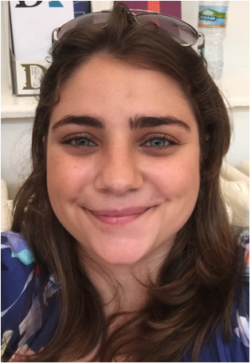
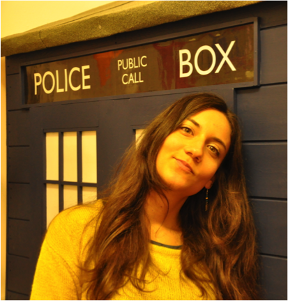

Representing the graduate student community at Newnham College
Click the green icons below for meal bookings & maintenance requests.
© Newnham MCR 2018
Hi everyone! I’m Sam, a second year PhD student researching major social and religious changes in Anglo-Saxon England utilising stable isotope analysis in the Department of Archaeology. I’m your president for this year, meaning I’m the first port of call for any MCR and graduate studies questions you might have if you’re otherwise unsure of whom to talk to. As president it is my job to help the other officers run great events and provide a variety of support services for you, as well as maintain a great safe space inside the MCR itself to socialise and work. It is also my job alongside the Governing Body rep and the External Officer to represent you all at larger College and University level meetings. A little more about me: I’m an Australian, sport enthusiast, travel obsessive and Netflix junkie. I’m a perpetual student and researcher, and therefore really understand the myriad of challenges and fantastic opportunities we face as graduate students. We have a brilliantly unique college experience here at Newnham, full of amazing women who are constant sources of inspiration, encouragement and support. Welcome to this great community, I hope to meet you all around college soon!
Josie is a second year PhD student in the Department of Chemistry, researching novel cancer therapeutics. She is originally from Cambridge but did her undergraduate degree and MSci in Chemistry at the University of Nottingham. She was the MCR secretary last year and is very much looking forward to spending another year supporting all the other amazing roles on the MCR committee and generally helping the MCR community of Newnham. Please feel free to email her if you have any questions!
Tanya is a third-year PhD student in Education and is delighted to be your treasurer. As treasurer, Tanya oversees the MCR account and budget and ensures that it meets the needs of the community. Feel free to let her know of any suggestions that the MCR could subscribe to which would make Newnham feel more like home.
My name is Mobeen Hussain (or Asia Mobeen Hussain in case you need to find my pigeonhole). I am a first year History PhD student. I am your College Governing Body and Council representative which basically means that I represent the MCR interests amongst the 'higher ups' at the college. I am straight talking Northerner who will ensure the needs of graduates are met. I am also on the Library committee and can represent graduate students effectively having worked at an academic library for a number of years. I enjoy reading, Zumba and all things Lord of the Rings related. I also love tea, cake and a good chat so please do get in touch if you need to discuss anything.
Rachel is in her 3rd year of PhD and 6th year at Newnham. She is happy to represent the college at CUSU and GU councils as long as she gets to join in with all the MCR fun! :D
I'm Helena, 3rd year PhD student in Computer Science. This will be my second time as the Newnham MCR IT officer, after taking the same role during my first year as a graduate student (2015-16). My first and main duty is to fix the MCR Website (which is currently not working), and take care of its maintenance. I will update the MCR calendar and make sure all the relevant links are available and easy to reach. I am always open to suggestions and happy to include new additions such as links, videos, photos or interesting pages to our Website.
I’m Mahnoor, your Women’s Officer. I am an MPhil student in Classics and I am exciting to establish projects like reading groups and ongoing donation drives. I would love to hear any ideas about how to make this year as rewarding and enjoyable for all of us as possible, please don’t hesitate to get in touch!
Katerina is a third year PhD student in Developmental Biology. She did her BSc in Biomedical Sciences at the University of Surrey and her MSc in Clinical Embryology at the University of Oxford. Being a Newnhamite is what makes her Cambridge experience so amazing! As a Welfare Officer of Newnham MCR, she will make sure that Newnham feels like home for the MCR community. She will be taking care of your physical, mental, and social wellbeing. Her role is to provide you with support on sexual and mental health issues, sports issues, and accommodation issues. Don’t hesitate to contact her if you want to talk to someone!

Hello! I'm Eva, a third year PhD student in developmental neurobiology in the Department of Zoology. I'm one of the Welfare Officers this year, which means it's my job to signpost students who are looking for some help. During your graduate studies you may find that you are in need of some extra support and at Cambridge and Newnham there a lot of services available to you. Whether you are dealing with issues related to your mental health, financial concerns, physical wellbeing, or problems with your studies, you can contact me or my co-officer Katerina for guidance about where to go to access different services. Similarly, if you just want have a chat with a friendly ear you can always drop me a message - this is my fourth year in Cambridge and so I have had some experience with the trials and tribulations, both personal and academic, that can arise while studying here. As Welfare Officers, Katerina and I will also be arranging different Welfare events throughout the year, so you can look out for these by email, on Facebook, and the MCR calendar.
Hannah is an English-Irish-American-South African, which really just means people think she is foreign where ever she goes. Before coming to Cambridge she did a masters course at Imperial college London looking at parasite resistance and gene drive technology in the Malaria vector species. Hannah is currently a second year Ph.D. student studying drug resistance in the Malaria Parasite. She would like to reassure all liberal arts students that she is very unlikely to accidentally infect you. She was previously a very active member of the Imperial queer and feminist society. During her time at Newnham, she hopes to provide a sense of community by organizing a series of queer-focused events both in and outside college as well as by providing confidential support to anyone who needs it
Hi everyone, my name is Julia and I’m one of your LGBT officers. I am doing a PGCE at the moment in Secondary History and this is my second year at Newnham, having completed a MPhil in Modern European History last year. You can usually find me cracking jokes, eating food, having a good slug of wine or faffing with my fringe - maybe even the full combination. I really love the college and the community we have built, so if you ever have any questions or worries feel free to fire them my way. My job is to represent all students who fall under the LGBT+ umbrella and organise events with the MCR. If anyone has any requests or ideas for events, please do get in touch!
I am an LLM student and the 2017-2018 Newnham MCR International Officer. If you are part of the majority of the MCR who are from outside the UK, as part of the MCR welfare team I am here to help you in whatever way I can. I am also responsible for promoting Newnham’s internationality and planning international themed events, especially around international holidays. I am very friendly and keen to meet all of you, so please feel free to contact me if you have any questions, concerns or suggestions!
My name is Emily Tilby and I am a 1st year Archaeology PhD student studying the small mammal remains of Shanidar Cave in Iraqi Kurdistan and my role on the MCR committee is Environmental Officer. As part of this role I am involved in promoting sustainability and environmentally friendly practices in college as well as liaising with the Garden Committee to discuss the use of the gardens and the playing fields. I represent the MCR in the Garden Committee, Environmental Working group and Fairtrade Steering group meetings as well as attending the general joint committee meetings. I am also an ambassador for the university wide Student Switch Off Campaign. In addition to this I am hoping to run some environmentally themed events over the year and encourage more MCR involvement with the gardens and wildlife around Newnham. If you have any questions about any of the above committees or campaigns, or just want to know more about environmental policies in college and use of the gardens please get in touch.
Elisa is originally from Munich, Germany and is pursuing an MPhil in Innovation, Strategy and Organization and Judge Business School. Elisa did her undergraduate in Economics at Middlebury College in Vermont and last lived and worked in San Francisco, California as a consultant before moving to Cambridge. In her free-time Elisa enjoys outdoor walks and portrait photography. She is excited to be a part of the MCR committee this year and to help organize a variety of social events for the grad community.
I'm Hannah, a second year PhD student at the Institute of Criminology. Originally from Dublin, I've been living in the UK for three years now, and two of those have been in Cambridge. I'm one of the four social secretaries on the MCR committee for 2017-18, and this means along with Dayana, Stani, and Elisa, I'm responsible for organising social events for graduate Newnhamites! Come have a chat or send me a message on Facebook if you have any particular events in mind - we are more than happy to receive suggestions!

Hi! I’m Stani and I'm one of this year's SocSecs! I'm a first-year PhD student and despite being like super old and experienced, I'm easily convinced into all sorts of exciting new projects and always happy to help! I have a lot of experience in putting together parties, concerts and socials, in fundraising, and in helping colleagues find the relevant information. So, I'm here for you, together with the rest of the MRC, happy to help with whatever problem you might have, or with putting together whatever crazy idea you might have in mind (within legal boundaries). Just drop me an email! =)
Hello everyone! My name is Dayana Hristova and I am a first-year PhD student in Immunology. I am one of the social secretaries of Newnham College MCR along with Hannah Gaffney, Elisa Berger and Stanimira Georgieva. Our role is to enliven the atmosphere among the Newnhamites by organising a number of fun activities, such as movie nights, crafts events, garden parties, etc. Furthermore, we aim to break down the boundaries of our community by organising the popular formal swaps with other colleges.
I’m Elisabeth, a postgraduate in American literature. I’m originally from Germany and Brazil, but before coming to Cambridge I spent much of my life in Africa and the Middle East. What makes Cambridge an extraordinary place to be is the holistic experience of life as a Cantab. It’s the confluence of rigorous academics and dynamic social and intellectual communities that holds great promise for growth at both the individual and collective levels. Though you’ll always find lectures and panels throughout the University at large, as Guest Speaker Organiser I cannot wait to invite speakers with particular relevance to Newnham’s postgraduates. To this end, I’ll be consulting with both the MCR and postgraduates to make discretionary decisions on which exciting guest speakers to host. Do contact me if you have any special requests!